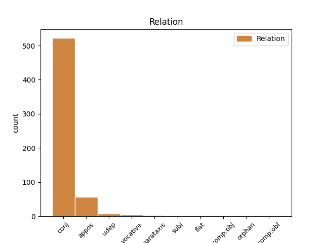
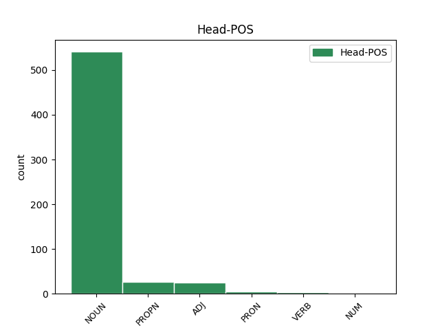
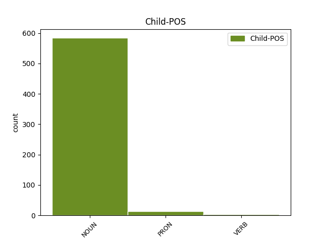

Distribution of features within this leaf



Agreement Rules sorted by frequency.
- When the dependent token is the conjunct(conj) of the head token, and the dependent token is NOUN.
1 Το _ _ _ _ 0 _ _ _
2 άρθρο _ _ _ _ 0 _ _ _
3 9 _ _ _ _ 0 _ _ _
4 του _ _ _ _ 0 _ _ _
5 Πρωτοκόλλου _ _ _ _ 0 _ _ _
6 , _ _ _ _ 0 _ _ _
7 όπως _ _ _ _ 0 _ _ _
8 επεσήμανε _ _ _ _ 0 _ _ _
9 με _ _ _ _ 0 _ _ _
10 αυστηρότητα _ _ _ _ 0 _ _ _
11 η _ _ _ _ 0 _ _ _
12 Πρόεδρος _ _ _ _ 0 _ _ _
13 Fontaine _ _ _ _ 0 _ _ _
14 σ _ _ _ _ 0 _ _ _
15 τον _ _ _ _ 0 _ _ _
16 Εισαγγελέα _ _ _ _ 0 _ _ _
17 , _ _ _ _ 0 _ _ _
18 μας _ _ _ _ 0 _ _ _
19 απαλλάσσει _ _ _ _ 0 _ _ _
20 τελείως _ _ _ _ 0 _ _ _
21 από _ _ _ _ 0 _ _ _
22 οποιαδήποτε _ _ _ _ 0 _ _ _
23 νομική _ _ _ _ 0 _ _ _
24 διαδικασία _ _ _ _ 0 _ _ _
25 σε _ _ _ _ 0 _ _ _
26 σχέση _ _ _ _ 0 _ _ _
27 με _ _ _ _ 0 _ _ _
28 την _ _ _ _ 0 _ _ _
29 έκφραση _ _ _ _ 0 _ _ _
30 γνώμης γνώμη NOUN NOUN Case=Gen|Gender=Fem|Number=Sing 0 _ _ _
31 ή _ _ _ _ 0 _ _ _
32 ψήφου ψήφος NOUN NOUN Case=Gen|Gender=Fem|Number=Sing 30 conj _ _
33 κατά _ _ _ _ 0 _ _ _
34 την _ _ _ _ 0 _ _ _
35 άσκηση _ _ _ _ 0 _ _ _
36 των _ _ _ _ 0 _ _ _
37 καθηκόντων _ _ _ _ 0 _ _ _
38 μας _ _ _ _ 0 _ _ _
39 ως _ _ _ _ 0 _ _ _
40 μέλη _ _ _ _ 0 _ _ _
41 αυτού _ _ _ _ 0 _ _ _
42 του _ _ _ _ 0 _ _ _
43 Κοινοβουλίου _ _ _ _ 0 _ _ _
44 . _ _ _ _ 0 _ _ _
1 Αυτό _ _ _ _ 0 _ _ _
2 μπορεί _ _ _ _ 0 _ _ _
3 να _ _ _ _ 0 _ _ _
4 μην _ _ _ _ 0 _ _ _
5 οδηγήσει _ _ _ _ 0 _ _ _
6 σ _ _ _ _ 0 _ _ _
7 τη _ _ _ _ 0 _ _ _
8 λήξη _ _ _ _ 0 _ _ _
9 του _ _ _ _ 0 _ _ _
10 εν _ _ _ _ 0 _ _ _
11 λόγω _ _ _ _ 0 _ _ _
12 ζητήματος _ _ _ _ 0 _ _ _
13 αλλά _ _ _ _ 0 _ _ _
14 , _ _ _ _ 0 _ _ _
15 σ _ _ _ _ 0 _ _ _
16 τη _ _ _ _ 0 _ _ _
17 μορφή _ _ _ _ 0 _ _ _
18 υπό _ _ _ _ 0 _ _ _
19 την _ _ _ _ 0 _ _ _
20 οποία _ _ _ _ 0 _ _ _
21 την _ _ _ _ 0 _ _ _
22 λάβαμε _ _ _ _ 0 _ _ _
23 , _ _ _ _ 0 _ _ _
24 αυτή _ _ _ _ 0 _ _ _
25 η _ _ _ _ 0 _ _ _
26 αίτηση _ _ _ _ 0 _ _ _
27 άρσης _ _ _ _ 0 _ _ _
28 της _ _ _ _ 0 _ _ _
29 ασυλίας _ _ _ _ 0 _ _ _
30 ήταν _ _ _ _ 0 _ _ _
31 , _ _ _ _ 0 _ _ _
32 κατά _ _ _ _ 0 _ _ _
33 την _ _ _ _ 0 _ _ _
34 άποψη _ _ _ _ 0 _ _ _
35 της _ _ _ _ 0 _ _ _
36 Επιτροπής _ _ _ _ 0 _ _ _
37 Νομικών _ _ _ _ 0 _ _ _
38 Θεμάτων _ _ _ _ 0 _ _ _
39 , _ _ _ _ 0 _ _ _
40 απαράδεκτη απαράδεκτος ADJ ADJ Case=Nom|Gender=Fem|Number=Sing 0 _ _ _
41 , _ _ _ _ 0 _ _ _
42 άποψη άποψη NOUN NOUN Case=Acc|Gender=Fem|Number=Sing 40 appos _ _
43 την _ _ _ _ 0 _ _ _
44 οποία _ _ _ _ 0 _ _ _
45 συνιστώ _ _ _ _ 0 _ _ _
46 σ _ _ _ _ 0 _ _ _
47 το _ _ _ _ 0 _ _ _
48 Σώμα _ _ _ _ 0 _ _ _
49 να _ _ _ _ 0 _ _ _
50 υιοθετήσει _ _ _ _ 0 _ _ _
51 . _ _ _ _ 0 _ _ _
1 Οι _ _ _ _ 0 _ _ _
2 ανάδοχοι _ _ _ _ 0 _ _ _
3 είναι _ _ _ _ 0 _ _ _
4 , _ _ _ _ 0 _ _ _
5 ούτως _ _ _ _ 0 _ _ _
6 ή _ _ _ _ 0 _ _ _
7 άλλως _ _ _ _ 0 _ _ _
8 , _ _ _ _ 0 _ _ _
9 υποχρεωμένοι _ _ _ _ 0 _ _ _
10 να _ _ _ _ 0 _ _ _
11 συμμορφώνονται _ _ _ _ 0 _ _ _
12 με _ _ _ _ 0 _ _ _
13 το _ _ _ _ 0 _ _ _
14 σύνολο _ _ _ _ 0 _ _ _
15 των _ _ _ _ 0 _ _ _
16 εφαρμοστέων _ _ _ _ 0 _ _ _
17 νόμων _ _ _ _ 0 _ _ _
18 και _ _ _ _ 0 _ _ _
19 υποχρεώσεων _ _ _ _ 0 _ _ _
20 , _ _ _ _ 0 _ _ _
21 είτε _ _ _ _ 0 _ _ _
22 κοινωνικής κοινωνικός ADJ ADJ Case=Gen|Gender=Fem|Number=Sing 0 _ _ _
23 είτε _ _ _ _ 0 _ _ _
24 άλλης άλλος PRON PRON Case=Gen|Gender=Fem|Number=Sing|Person=3|PronType=Ind 22 conj _ _
25 φύσης _ _ _ _ 0 _ _ _
26 . _ _ _ _ 0 _ _ _
1 Σ _ _ _ _ 0 _ _ _
2 τα _ _ _ _ 0 _ _ _
3 ανατολικά _ _ _ _ 0 _ _ _
4 της _ _ _ _ 0 _ _ _
5 πόλης _ _ _ _ 0 _ _ _
6 της _ _ _ _ 0 _ _ _
7 Κέρκυρας _ _ _ _ 0 _ _ _
8 βρίσκεται _ _ _ _ 0 _ _ _
9 το _ _ _ _ 0 _ _ _
10 Παλαιό _ _ _ _ 0 _ _ _
11 Φρούριο _ _ _ _ 0 _ _ _
12 , _ _ _ _ 0 _ _ _
13 χτισμένο χτίζω VERB VERB Aspect=Perf|Case=Nom|Gender=Neut|Number=Sing|VerbForm=Part|Voice=Pass 0 _ _ _
14 τα _ _ _ _ 0 _ _ _
15 μέσα μέσο NOUN NOUN Case=Acc|Gender=Neut|Number=Plur 13 udep _ _
16 του _ _ _ _ 0 _ _ _
17 16ου _ _ _ _ 0 _ _ _
18 αιώνα _ _ _ _ 0 _ _ _
19 , _ _ _ _ 0 _ _ _
20 εντός _ _ _ _ 0 _ _ _
21 του _ _ _ _ 0 _ _ _
22 οποίου _ _ _ _ 0 _ _ _
23 μπορεί _ _ _ _ 0 _ _ _
24 κάποιος _ _ _ _ 0 _ _ _
25 να _ _ _ _ 0 _ _ _
26 δει _ _ _ _ 0 _ _ _
27 το _ _ _ _ 0 _ _ _
28 ναό _ _ _ _ 0 _ _ _
29 του _ _ _ _ 0 _ _ _
30 Αγίου _ _ _ _ 0 _ _ _
31 Γεωργίου _ _ _ _ 0 _ _ _
32 - _ _ _ _ 0 _ _ _
33 μοναδική _ _ _ _ 0 _ _ _
34 παγκοσμίως _ _ _ _ 0 _ _ _
35 ορθόδοξη _ _ _ _ 0 _ _ _
36 εκκλησία _ _ _ _ 0 _ _ _
37 δωρικού _ _ _ _ 0 _ _ _
38 ρυθμού _ _ _ _ 0 _ _ _
39 - _ _ _ _ 0 _ _ _
40 και _ _ _ _ 0 _ _ _
41 τους _ _ _ _ 0 _ _ _
42 παλιούς _ _ _ _ 0 _ _ _
43 αγγλικούς _ _ _ _ 0 _ _ _
44 στρατώνες _ _ _ _ 0 _ _ _
45 . _ _ _ _ 0 _ _ _
1 Μία _ _ _ _ 0 _ _ _
2 τελευταία _ _ _ _ 0 _ _ _
3 , _ _ _ _ 0 _ _ _
4 αλλά _ _ _ _ 0 _ _ _
5 σημαντική _ _ _ _ 0 _ _ _
6 παρατήρηση _ _ _ _ 0 _ _ _
7 , _ _ _ _ 0 _ _ _
8 γιατί _ _ _ _ 0 _ _ _
9 τόσο _ _ _ _ 0 _ _ _
10 εσείς εγώ PRON PRON Case=Nom|Gender=Masc|Number=Plur|Person=2|PronType=Prs 0 _ _ _
11 , _ _ _ _ 0 _ _ _
12 κύριε _ _ _ _ 0 _ _ _
13 Πρόεδρε πρόεδρος NOUN NOUN Case=Voc|Gender=Masc|Number=Sing 10 vocative _ SpaceAfter=No
14 , _ _ _ _ 0 _ _ _
15 όσο _ _ _ _ 0 _ _ _
16 και _ _ _ _ 0 _ _ _
17 ο _ _ _ _ 0 _ _ _
18 κ. _ _ _ _ 0 _ _ _
19 Poettering _ _ _ _ 0 _ _ _
20 αναφερθήκατε _ _ _ _ 0 _ _ _
21 σε _ _ _ _ 0 _ _ _
22 αυτό _ _ _ _ 0 _ _ _
23 με _ _ _ _ 0 _ _ _
24 διαφορετικούς _ _ _ _ 0 _ _ _
25 τρόπους _ _ _ _ 0 _ _ _
26 . _ _ _ _ 0 _ _ _
1 Αλγερία Αλγερία PROPN PROPN Case=Acc|Gender=Fem|Number=Sing 0 _ _ _
2 : _ _ _ _ 0 _ _ _
3 Απαγωγές απαγωγή NOUN NOUN Case=Acc|Gender=Fem|Number=Plur 1 parataxis _ _
4 ξένων _ _ _ _ 0 _ _ _
5 πολιτών _ _ _ _ 0 _ _ _
6 απ' _ _ _ _ 0 _ _ _
7 την _ _ _ _ 0 _ _ _
8 Αλ _ _ _ _ 0 _ _ _
9 Κάιντα _ _ _ _ 0 _ _ _
10 . _ _ _ _ 0 _ _ _
1 Δεν _ _ _ _ 0 _ _ _
2 υπάρχει _ _ _ _ 0 _ _ _
3 νόημα _ _ _ _ 0 _ _ _
4 σ _ _ _ _ 0 _ _ _
5 το _ _ _ _ 0 _ _ _
6 να _ _ _ _ 0 _ _ _
7 πούμε _ _ _ _ 0 _ _ _
8 ότι _ _ _ _ 0 _ _ _
9 πρέπει _ _ _ _ 0 _ _ _
10 να _ _ _ _ 0 _ _ _
11 χρησιμοποιούμε _ _ _ _ 0 _ _ _
12 το _ _ _ _ 0 _ _ _
13 δημόσιο _ _ _ _ 0 _ _ _
14 χρήμα _ _ _ _ 0 _ _ _
15 απλώς _ _ _ _ 0 _ _ _
16 και _ _ _ _ 0 _ _ _
17 μόνο _ _ _ _ 0 _ _ _
18 για _ _ _ _ 0 _ _ _
19 να _ _ _ _ 0 _ _ _
20 υποστηρίζουμε _ _ _ _ 0 _ _ _
21 ένα _ _ _ _ 0 _ _ _
22 αποτυχημένο αποτυγχάνω VERB VERB Aspect=Perf|Case=Acc|Gender=Neut|Number=Sing|VerbForm=Part|Voice=Pass 0 _ _ _
23 ή _ _ _ _ 0 _ _ _
24 απηρχαιωμένο απαρχαιωμένος VERB VERB Aspect=Perf|Case=Acc|Gender=Neut|Number=Sing|VerbForm=Part|Voice=Pass 22 conj _ _
25 σύστημα _ _ _ _ 0 _ _ _
26 . _ _ _ _ 0 _ _ _
1 Προτάθηκαν _ _ _ _ 0 _ _ _
2 για _ _ _ _ 0 _ _ _
3 τη _ _ _ _ 0 _ _ _
4 θέση _ _ _ _ 0 _ _ _
5 του _ _ _ _ 0 _ _ _
6 Γενικού _ _ _ _ 0 _ _ _
7 Διοικητή _ _ _ _ 0 _ _ _
8 του _ _ _ _ 0 _ _ _
9 νησιού _ _ _ _ 0 _ _ _
10 οι _ _ _ _ 0 _ _ _
11 Δροζ _ _ _ _ 0 _ _ _
12 , _ _ _ _ 0 _ _ _
13 Σέφερ _ _ _ _ 0 _ _ _
14 , _ _ _ _ 0 _ _ _
15 ο _ _ _ _ 0 _ _ _
16 Μαυροβούνιος _ _ _ _ 0 _ _ _
17 Πέτροβιτς _ _ _ _ 0 _ _ _
18 Μπόζα _ _ _ _ 0 _ _ _
19 , _ _ _ _ 0 _ _ _
20 ο _ _ _ _ 0 _ _ _
21 πρίγκιπας _ _ _ _ 0 _ _ _
22 Βάττεμβεργ _ _ _ _ 0 _ _ _
23 ενώ _ _ _ _ 0 _ _ _
24 οι _ _ _ _ 0 _ _ _
25 Τούρκοι _ _ _ _ 0 _ _ _
26 ήθελαν _ _ _ _ 0 _ _ _
27 γι' _ _ _ _ 0 _ _ _
28 αυτή _ _ _ _ 0 _ _ _
29 τη _ _ _ _ 0 _ _ _
30 θέση _ _ _ _ 0 _ _ _
31 τον _ _ _ _ 0 _ _ _
32 Ανθόπουλο Ανθόπουλος PROPN PROPN Case=Acc|Gender=Masc|Number=Sing 0 _ _ _
33 πασά πασάς NOUN NOUN Case=Acc|Gender=Masc|Number=Sing 32 flat _ SpaceAfter=No
34 . _ _ _ _ 0 _ _ _
1 Αβοήθητοι αβοήθητος ADJ ADJ Case=Nom|Gender=Masc|Number=Plur 0 _ _ _
2 οι _ _ _ _ 0 _ _ _
3 άμαχοι άμαχος NOUN NOUN Case=Nom|Gender=Masc|Number=Plur 1 subj _ _
4 σ _ _ _ _ 0 _ _ _
5 τη _ _ _ _ 0 _ _ _
6 Μπάμπα _ _ _ _ 0 _ _ _
7 Αμρ _ _ _ _ 0 _ _ _
8 της _ _ _ _ 0 _ _ _
9 Συρίας _ _ _ _ 0 _ _ _
1 Σ _ _ _ _ 0 _ _ _
2 το _ _ _ _ 0 _ _ _
3 εσωτερικό _ _ _ _ 0 _ _ _
4 του _ _ _ _ 0 _ _ _
5 φρουρίου _ _ _ _ 0 _ _ _
6 , _ _ _ _ 0 _ _ _
7 τα _ _ _ _ 0 _ _ _
8 σπίτια _ _ _ _ 0 _ _ _
9 ήταν _ _ _ _ 0 _ _ _
10 μικρά _ _ _ _ 0 _ _ _
11 και _ _ _ _ 0 _ _ _
12 χτισμένα χτίζω ADJ ADJ Case=Nom|Gender=Neut|Number=Plur 0 _ _ _
13 το _ _ _ _ 0 _ _ _
14 ένα ένας PRON PRON Case=Nom|Gender=Neut|Number=Sing|Person=3|PronType=Ind 12 subj _ _
15 πολύ _ _ _ _ 0 _ _ _
16 κοντά _ _ _ _ 0 _ _ _
17 σ _ _ _ _ 0 _ _ _
18 το _ _ _ _ 0 _ _ _
19 άλλο _ _ _ _ 0 _ _ _
20 , _ _ _ _ 0 _ _ _
21 λόγω _ _ _ _ 0 _ _ _
22 έλλειψης _ _ _ _ 0 _ _ _
23 χώρου _ _ _ _ 0 _ _ _
24 . _ _ _ _ 0 _ _ _
1 Ένα _ _ _ _ 0 _ _ _
2 από _ _ _ _ 0 _ _ _
3 τα _ _ _ _ 0 _ _ _
4 ζητήματα _ _ _ _ 0 _ _ _
5 που _ _ _ _ 0 _ _ _
6 θα _ _ _ _ 0 _ _ _
7 πρέπει _ _ _ _ 0 _ _ _
8 προφανώς _ _ _ _ 0 _ _ _
9 να _ _ _ _ 0 _ _ _
10 ελέγχει _ _ _ _ 0 _ _ _
11 η _ _ _ _ 0 _ _ _
12 Επιτροπή _ _ _ _ 0 _ _ _
13 είναι _ _ _ _ 0 _ _ _
14 εάν _ _ _ _ 0 _ _ _
15 οι _ _ _ _ 0 _ _ _
16 αλλοδαποί _ _ _ _ 0 _ _ _
17 μεταφορείς _ _ _ _ 0 _ _ _
18 ελέγχονται _ _ _ _ 0 _ _ _
19 αυστηρότερα _ _ _ _ 0 _ _ _
20 από _ _ _ _ 0 _ _ _
21 ό,τι _ _ _ _ 0 _ _ _
22 οι _ _ _ _ 0 _ _ _
23 ημεδαποί ημεδαπός ADJ ADJ Case=Nom|Gender=Masc|Number=Plur 0 _ _ _
24 , _ _ _ _ 0 _ _ _
25 δηλαδή _ _ _ _ 0 _ _ _
26 όσοι όσος PRON PRON Case=Nom|Gender=Masc|Number=Plur|Person=3|PronType=Ind,Rel 23 appos _ _
27 έχουν _ _ _ _ 0 _ _ _
28 την _ _ _ _ 0 _ _ _
29 ίδια _ _ _ _ 0 _ _ _
30 υπηκοότητα _ _ _ _ 0 _ _ _
31 με _ _ _ _ 0 _ _ _
32 τους _ _ _ _ 0 _ _ _
33 ελεγκτές _ _ _ _ 0 _ _ _
34 . _ _ _ _ 0 _ _ _
1 Η _ _ _ _ 0 _ _ _
2 δράση _ _ _ _ 0 _ _ _
3 3 _ _ _ _ 0 _ _ _
4 περιλαμβάνει _ _ _ _ 0 _ _ _
5 τις _ _ _ _ 0 _ _ _
6 πρωτοβουλίες _ _ _ _ 0 _ _ _
7 σ _ _ _ _ 0 _ _ _
8 τον _ _ _ _ 0 _ _ _
9 τομέα _ _ _ _ 0 _ _ _
10 της _ _ _ _ 0 _ _ _
11 νεολαίας _ _ _ _ 0 _ _ _
12 , _ _ _ _ 0 _ _ _
13 η _ _ _ _ 0 _ _ _
14 δράση δράση NOUN NOUN Case=Nom|Gender=Fem|Number=Sing 0 _ _ _
15 4 _ _ _ _ 0 _ _ _
16 την _ _ _ _ 0 _ _ _
17 υποστήριξη υποστήριξη NOUN NOUN Case=Acc|Gender=Fem|Number=Sing 14 orphan _ _
18 πρωτοβουλιών _ _ _ _ 0 _ _ _
19 που _ _ _ _ 0 _ _ _
20 ξεπερνούν _ _ _ _ 0 _ _ _
21 το _ _ _ _ 0 _ _ _
22 πλαίσιο _ _ _ _ 0 _ _ _
23 των _ _ _ _ 0 _ _ _
24 μεμονωμένων _ _ _ _ 0 _ _ _
25 προγραμμάτων _ _ _ _ 0 _ _ _
26 και _ _ _ _ 0 _ _ _
27 διεξάγονται _ _ _ _ 0 _ _ _
28 από _ _ _ _ 0 _ _ _
29 κοινού _ _ _ _ 0 _ _ _
30 με _ _ _ _ 0 _ _ _
31 τα _ _ _ _ 0 _ _ _
32 προγράμματα _ _ _ _ 0 _ _ _
33 LEONARDO _ _ _ _ 0 _ _ _
34 και _ _ _ _ 0 _ _ _
35 ΣΩΚΡΑΤΗΣ _ _ _ _ 0 _ _ _
36 . _ _ _ _ 0 _ _ _
1 Χάρη _ _ _ _ 0 _ _ _
2 σ _ _ _ _ 0 _ _ _
3 το _ _ _ _ 0 _ _ _
4 Κοινοβούλιο _ _ _ _ 0 _ _ _
5 , _ _ _ _ 0 _ _ _
6 η _ _ _ _ 0 _ _ _
7 οδηγία _ _ _ _ 0 _ _ _
8 θα _ _ _ _ 0 _ _ _
9 μπορέσει _ _ _ _ 0 _ _ _
10 τελικά _ _ _ _ 0 _ _ _
11 να _ _ _ _ 0 _ _ _
12 καλύψει _ _ _ _ 0 _ _ _
13 όλους _ _ _ _ 0 _ _ _
14 τους _ _ _ _ 0 _ _ _
15 οδηγούς οδηγός NOUN NOUN Case=Acc|Gender=Masc|Number=Plur 0 _ _ _
16 όλων _ _ _ _ 0 _ _ _
17 των _ _ _ _ 0 _ _ _
18 κατηγοριών _ _ _ _ 0 _ _ _
19 , _ _ _ _ 0 _ _ _
20 αυτοαπασχολούμενους αυτοαπασχολούμενος VERB VERB Aspect=Perf|Case=Acc|Gender=Masc|Number=Plur|VerbForm=Part|Voice=Pass 15 appos _ _
21 και _ _ _ _ 0 _ _ _
22 μη _ _ _ _ 0 _ _ _
23 . _ _ _ _ 0 _ _ _
Disagree Examples:
1 Σε _ _ _ _ 0 _ _ _
2 αρκετά _ _ _ _ 0 _ _ _
3 σημεία _ _ _ _ 0 _ _ _
4 του _ _ _ _ 0 _ _ _
5 ποταμού _ _ _ _ 0 _ _ _
6 σχηματίζονται _ _ _ _ 0 _ _ _
7 νερόλακκοι νερόλακκος NOUN NOUN Case=Nom|Gender=Masc|Number=Plur 0 _ _ _
8 και _ _ _ _ 0 _ _ _
9 μικρές _ _ _ _ 0 _ _ _
10 λιμνούλες λιμνούλα NOUN NOUN Case=Nom|Gender=Fem|Number=Plur 7 conj _ SpaceAfter=No
11 . _ _ _ _ 0 _ _ _
1 Σε _ _ _ _ 0 _ _ _
2 περιοχές _ _ _ _ 0 _ _ _
3 γύρω _ _ _ _ 0 _ _ _
4 από _ _ _ _ 0 _ _ _
5 τον _ _ _ _ 0 _ _ _
6 ποταμό _ _ _ _ 0 _ _ _
7 φιλοξενούνται _ _ _ _ 0 _ _ _
8 σπάνια _ _ _ _ 0 _ _ _
9 είδη _ _ _ _ 0 _ _ _
10 φυτών _ _ _ _ 0 _ _ _
11 - _ _ _ _ 0 _ _ _
12 πάνω _ _ _ _ 0 _ _ _
13 από _ _ _ _ 0 _ _ _
14 180 _ _ _ _ 0 _ _ _
15 - _ _ _ _ 0 _ _ _
16 αλλά _ _ _ _ 0 _ _ _
17 και _ _ _ _ 0 _ _ _
18 ζώων _ _ _ _ 0 _ _ _
19 όπως _ _ _ _ 0 _ _ _
20 γερακίνες γερακίνα NOUN NOUN Case=Nom|Gender=Fem|Number=Plur 0 _ _ _
21 , _ _ _ _ 0 _ _ _
22 λύκοι λύκος NOUN NOUN Case=Nom|Gender=Masc|Number=Plur 20 conj _ SpaceAfter=No
23 , _ _ _ _ 0 _ _ _
24 αγριογούρουνα _ _ _ _ 0 _ _ _
25 , _ _ _ _ 0 _ _ _
26 βίδρες _ _ _ _ 0 _ _ _
27 . _ _ _ _ 0 _ _ _
1 Σε _ _ _ _ 0 _ _ _
2 περιοχές _ _ _ _ 0 _ _ _
3 γύρω _ _ _ _ 0 _ _ _
4 από _ _ _ _ 0 _ _ _
5 τον _ _ _ _ 0 _ _ _
6 ποταμό _ _ _ _ 0 _ _ _
7 φιλοξενούνται _ _ _ _ 0 _ _ _
8 σπάνια _ _ _ _ 0 _ _ _
9 είδη _ _ _ _ 0 _ _ _
10 φυτών _ _ _ _ 0 _ _ _
11 - _ _ _ _ 0 _ _ _
12 πάνω _ _ _ _ 0 _ _ _
13 από _ _ _ _ 0 _ _ _
14 180 _ _ _ _ 0 _ _ _
15 - _ _ _ _ 0 _ _ _
16 αλλά _ _ _ _ 0 _ _ _
17 και _ _ _ _ 0 _ _ _
18 ζώων _ _ _ _ 0 _ _ _
19 όπως _ _ _ _ 0 _ _ _
20 γερακίνες _ _ _ _ 0 _ _ _
21 , _ _ _ _ 0 _ _ _
22 λύκοι λύκος NOUN NOUN Case=Nom|Gender=Masc|Number=Plur 0 _ _ _
23 , _ _ _ _ 0 _ _ _
24 αγριογούρουνα αγριογούρουνο NOUN NOUN Case=Nom|Gender=Neut|Number=Plur 22 conj _ SpaceAfter=No
25 , _ _ _ _ 0 _ _ _
26 βίδρες _ _ _ _ 0 _ _ _
27 . _ _ _ _ 0 _ _ _
1 Σε _ _ _ _ 0 _ _ _
2 περιοχές _ _ _ _ 0 _ _ _
3 γύρω _ _ _ _ 0 _ _ _
4 από _ _ _ _ 0 _ _ _
5 τον _ _ _ _ 0 _ _ _
6 ποταμό _ _ _ _ 0 _ _ _
7 φιλοξενούνται _ _ _ _ 0 _ _ _
8 σπάνια _ _ _ _ 0 _ _ _
9 είδη _ _ _ _ 0 _ _ _
10 φυτών _ _ _ _ 0 _ _ _
11 - _ _ _ _ 0 _ _ _
12 πάνω _ _ _ _ 0 _ _ _
13 από _ _ _ _ 0 _ _ _
14 180 _ _ _ _ 0 _ _ _
15 - _ _ _ _ 0 _ _ _
16 αλλά _ _ _ _ 0 _ _ _
17 και _ _ _ _ 0 _ _ _
18 ζώων _ _ _ _ 0 _ _ _
19 όπως _ _ _ _ 0 _ _ _
20 γερακίνες _ _ _ _ 0 _ _ _
21 , _ _ _ _ 0 _ _ _
22 λύκοι _ _ _ _ 0 _ _ _
23 , _ _ _ _ 0 _ _ _
24 αγριογούρουνα αγριογούρουνο NOUN NOUN Case=Nom|Gender=Neut|Number=Plur 0 _ _ _
25 , _ _ _ _ 0 _ _ _
26 βίδρες βίδρα NOUN NOUN Case=Nom|Gender=Fem|Number=Plur 24 conj _ SpaceAfter=No
27 . _ _ _ _ 0 _ _ _
1 Η _ _ _ _ 0 _ _ _
2 σημαντικότητα _ _ _ _ 0 _ _ _
3 του _ _ _ _ 0 _ _ _
4 Αχέροντα _ _ _ _ 0 _ _ _
5 ήταν _ _ _ _ 0 _ _ _
6 μεγάλη _ _ _ _ 0 _ _ _
7 κατά _ _ _ _ 0 _ _ _
8 την _ _ _ _ 0 _ _ _
9 αρχαιότητα _ _ _ _ 0 _ _ _
10 , _ _ _ _ 0 _ _ _
11 οπότε _ _ _ _ 0 _ _ _
12 και _ _ _ _ 0 _ _ _
13 ιδρύθηκε _ _ _ _ 0 _ _ _
14 σ _ _ _ _ 0 _ _ _
15 την _ _ _ _ 0 _ _ _
16 βορειοανατολική _ _ _ _ 0 _ _ _
17 όχθη _ _ _ _ 0 _ _ _
18 της _ _ _ _ 0 _ _ _
19 Αχερουσίας _ _ _ _ 0 _ _ _
20 το _ _ _ _ 0 _ _ _
21 Νεκρομαντείο νεκρομαντείο NOUN NOUN Case=Nom|Gender=Neut|Number=Sing 0 _ _ _
22 , _ _ _ _ 0 _ _ _
23 ο _ _ _ _ 0 _ _ _
24 σημαντικότερος _ _ _ _ 0 _ _ _
25 τόπος τόπος NOUN NOUN Case=Nom|Gender=Masc|Number=Sing 21 appos _ _
26 επικοινωνίας _ _ _ _ 0 _ _ _
27 με _ _ _ _ 0 _ _ _
28 τους _ _ _ _ 0 _ _ _
29 νεκρούς _ _ _ _ 0 _ _ _
30 και _ _ _ _ 0 _ _ _
31 λατρείας _ _ _ _ 0 _ _ _
32 των _ _ _ _ 0 _ _ _
33 θεών _ _ _ _ 0 _ _ _
34 του _ _ _ _ 0 _ _ _
35 Κάτω _ _ _ _ 0 _ _ _
36 Κόσμου _ _ _ _ 0 _ _ _
37 . _ _ _ _ 0 _ _ _